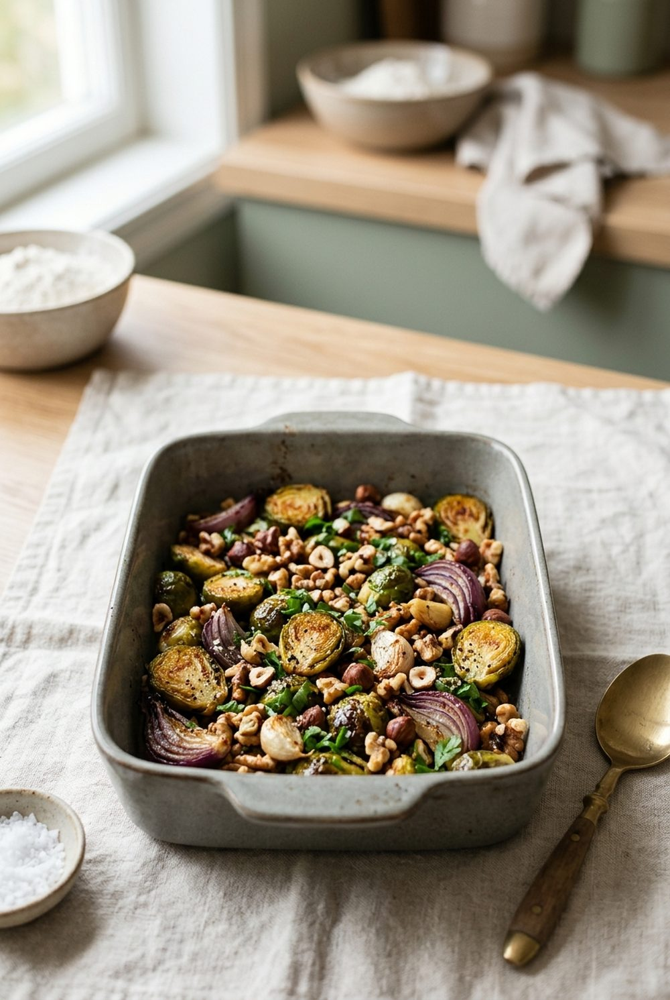

Gesunde Rezepte
Echtes Essen aus der WellANNI-App: Eiweiß aus Lebensmitteln statt aus Pulver, Süße aus Obst, Nährwerte pro Portion. In der App warten über 200 weitere.

Gerösteter Rosenkohl mit Nüssen
Rosenkohl aus dem Ofen schmeckt nussig statt bitter – das Geheimnis sind hohe Hitze und die Nüsse erst zum Schluss.

Halloumi-Eintopf mit Rosenkohl und Vollkornnudeln
Ein Topf, 25 Minuten: goldbrauner, quietschender Halloumi auf Rosenkohl und Nudeln.

Quinoa-Salat mit Rotkohl und Süßkartoffel
Kein Salat, nach dem du in einer Stunde wieder Hunger hast: Quinoa, Ofen-Süßkartoffel und Rotkohl.

Skyr mit Walnüssen und Zimt
Drei Zutaten, kein Kochen und richtig viel Eiweiß – cremig, nussig, zimtig.

Kabeljau vom Blech mit Rotkohl und Süßkartoffel
Ein Blech, wenig Abwasch: zarter Kabeljau mit ofengeröstetem Rotkohl und Süßkartoffel.

Griechischer Joghurt mit Granatapfel und Pistazien
Sieht aus wie im Café, dauert fünf Minuten: cremiger Joghurt, rubinrote Kerne, grüne Pistazien.

Tempeh-Curry mit Zucchini und Süßkartoffel
Knusprig gebratener Tempeh in cremiger Kokos-Currysauce – rein pflanzlich und richtig sättigend.

Grünkohl-Eintopf mit Kichererbsen und Vollkornnudeln
Grünkohl ohne Pinkel und ohne stundenlanges Kochen – herzhaft, rauchig und in 30 Minuten fertig.

Rote Linsensuppe mit Zitrone
Türkisch inspiriert: samtige Linsen, Kreuzkümmel und ein kräftiger Spritzer Zitrone.

Karotten-Ingwer-Suppe mit Orange
Sechs Zutaten, ein Topf, ein Pürierstab: Ingwer und Orange machen die Karottensuppe frisch und würzig.
Lachsfilet auf Spinatbett
Knusprige Lachshaut auf zartem Knoblauchspinat – fertig in zwanzig Minuten.

Beeren-Overnight-Oats mit Chia
Abends zwei Minuten, morgens sofort fertig: cremige Haferflocken mit fruchtigen Beeren.

Buchweizen-Porridge mit Apfel und Zimt
Nussig-warmer Buchweizen mit saftigem Apfel und Zimt – glutenfrei und in zehn Minuten fertig.

Schoko-Energy-Balls mit Datteln und Nüssen
Halloween-Snack ohne Backofen: Die Süße kommt aus den Datteln, der Schoko-Kick vom Kakao.